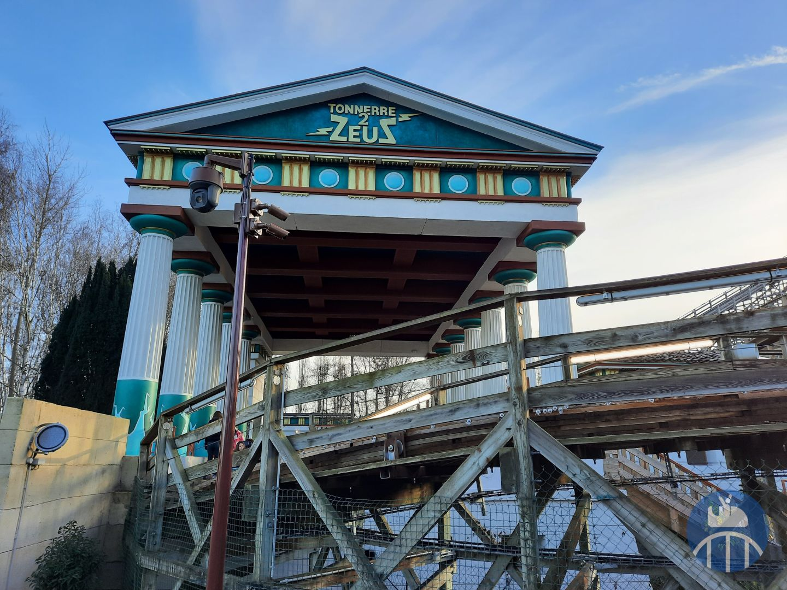

Bienvenue sur le site dédié à l'attraction Tonnerre 2 Zeus, une montagne russe en bois qui domine le paysage du Parc Astérix. Cette attraction figure parmi les plus rapides d'Europe et s'érige aux côtés de Goudurix, OzIris et La Trace du Hourra en tant que l'une des attractions emblématiques du parc.
Tonnerre 2 Zeus offre une expérience unique avec sa montée impressionnante et sa première descente plongeant habilement dans un tunnel, promettant aux visiteurs des sensations fortes inégalées. Tel que son nom l'indique, cette montagne russe en bois vise à évoquer une terreur délibérée, invitant les courageux à embarquer pour une aventure inoubliable au cœur de la mythologie grecque.
Explorez ce site pour plonger dans l'histoire captivante de Tonnerre 2 Zeus et découvrez ses caractéristiques techniques. De plus, notre site vous présentera les ajouts de la nouvelle version de l'attraction de 2022, vous permettant ainsi de suivre l'évolution de Tonnerre 2 Zeus au fil du temps.
Vous pourrez aussi remplir un formulaire qui va nous permettre de connaître vos avis sur cette attraction
 Haut de la page
Haut de la page